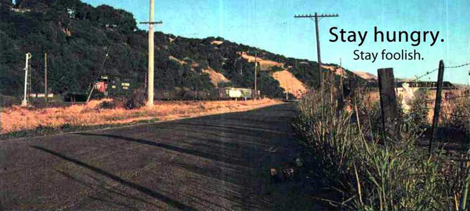

未来世界的幸存者
这本书是由阮一峰在2016年写的一本开源书籍，不少的篇章都是以前的博文，经过整理、编排后而发布的书。书中有着大量作者对社会、职业和发展方向的思考，以下是对于我来说比较印象深刻、比较有启发的篇章所归纳而成。
旧世界的崩塌
作者由AlaphaGo打败李世石事情、无人车的发明,引发思考，人工智能已经达到了很高的水准，随着社会进一步的发展，人工智能很可能代替现在的各种岗位，什么样的岗位是安全的、什么样的人是对社会有用的人？并且还看到随着技术的发展，人们能够在虚拟世界获得的满足越来越高，那么奋斗的意义何在？
作者认为世界上没有安全的职业，作者以两个例子，苹果公司表示不支持flash动画而导致flash工程师这个职位消失。诺基亚的塞班系统败给智能手机导致,塞班系统工程师失业。由此得出世界没有安全的职业。
作者认为即使终生学习，也不见得可以保证自己的竞争力，因为技术行业技术层出不穷，随着年龄的增长，很难向年轻人一样保持高度的热情与学习能力。等到技术跟不上时代时，就是被行业淘汰的时候了。因此呼吁我们提升:个性服务能力、人格魅力能力、创意能力、决策领导能力，注重底层知识(因为底层知识不容易变更,懂了底层知识更容易学习和使用新技术)。
作者还提到上班和下班已经过时,根据研究表明不用到公司上班的工作效率，明显高于要到公司上班的工作效率，并且有一些公司开始实行了这种方案，也有一些长期接外包项目的人和公司达成了雇佣关系。之所以无法得到推行，是因为人具有惰性，没有合理的监督手段，员工可能无法按时无法完成工作。
人生的B计划
人生的B计划中提到人生应该要有应急的B计划。它与现在的工作不同，最好不是同一个行业，它比现在的工作要冒险，但是可以给你带来很高的热情，它应该是你现在就能着手准备的，等到出现突发变故的时候，它能够让你更快的适应这个变故（行业不景气等），重新融入这个社会。
Stay hungry, Stay foolish 的原义
文中提到乔布斯在斯坦福演将的一句话stay hungry,stay foolish并放上了乔布斯引用这句话的原照片，虽然文中作者没有提到这句话具体的意思，但是看到这张晨光洒在乡间小路上的照片我想我跟乔布斯的心情是一样的，充满着对未知冒险的激动澎湃的心情。

新方向
个性也是一种竞争力
在这一节中以papi酱获得1200万风投为例子说明了在技术不断发展的当下，技术不断的消除差异，正因此人们也开始越来越重视个性。一个人若能够拥有的粉丝(支持者)数量，表现了他对社会、对市场的影响力，这也同样表现了他的个性受到的认可程度。当一个东西被大量承认价值，并且稀少时，那么自然就珍贵。